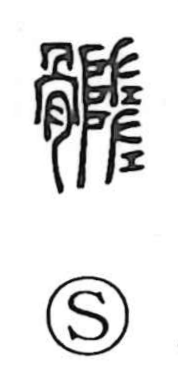

髄

Uncategorized
Kun: sune | On: zui
marrow ・ bone marrow ・ essence
Explanation
A phono-semantic character: the bone element supplies the meaning, while the right component acts as the phonetic, giving the On reading zui; the earliest form was written 髓. Shuowen glosses it as “the fat of the bone,” i.e., bone marrow. Because marrow was regarded as the body’s most vital substance, the graph also came to mean the innermost core or quintessence, as in shinzui. Classical lore tells of the Han recluse Dongfang Shuo, said to be eight thousand years old, who was famed for washing his brain-marrow once every three thousand years. In ancient Japan it was also read sune, “lower leg.”